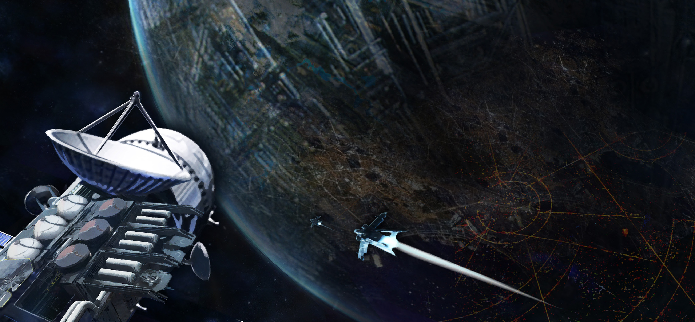

SYSTEM: COREL

Excurs - System: Corel
Corel ist ein System mit einem normalen Typ-G Hauptreihenstern und sechs weitgehend unauffälligen Planeten. Es liegt an der Grenze zwischem dem United Empire of Earth und dem BanuProtektorat, die durch eine Sprunglinie miteinander verbunden sind. Nachdem es im Jahr 2449 erstmals entdeckt und kurz darauf besiedelt worden war, entwickelte es sich zum Zollcheckpoint zwischen den beiden Staaten. Das System wurde im Zuge der gebündelten Anstrengungen, die bewohnten Gebiete des Weltraums zu kartieren, in den Jahrzehnten nach dem Erstkontakt der Menschheit mit den Banu entdeckt. Auf dem bewohnbaren dritten Planet Lo entstand als erstes ein gewöhnlicher Handelsposten zwischen den Menschen und den Banu. Er hat sich schließlich zur Anlaufstelle für jeglichen Spezies übergreifenden Schiffsverkehr entwickelt. Die Kultur im Corel System ist eine interessante Mischung aus Gepflogenheiten menschlicher Grenzer und der Bürokratie der Banu – etwas, das es in dieser Form nirgendwo anders in der Galaxie zu finden gibt. Heute legen Corelianer eine unerwartete Kombination aus Effizienz und Gelassenheit an den Tag. Darüber hinaus hat sich in den beinahe fünfhundert Jahren seit seiner Besiedlung wenig verändert, gemessen an dem, was bereits alles die Sprungpunkte passiert hat.
Wo Corel I inzwischen nur noch ein reiner planetärer Kern ist, fehlt Corel II genau dieser. Sonnenstürme haben die Atmosphäre von Corel II vollständig zerstört und nichts als einen toten Planeten ohne Magnetfeld übrig gelassen. Dessen Oberfläche ist jedoch extrem reichhaltig an Mineralien, wodurch er zu einem lukrativen Ziel für zukünftige Bergbaumissionen werden könnte. Heute zählt er zum offiziellen UEE-Regierungsterritorium, wobei davon ausgegangen wird, dass die Rechte an den Mineralien in naher Zukunft versteigert werden dürften. Corel II, der innerhalb der Grenzen des grünen Bandes liegt, ist technisch gesehen auch ein Terraforming-Kandidat, wenn auch keiner guter.
Lo ist im Grunde die letzte „Abfahrtmöglichkeit“ vor dem Banu-Protektorat und bietet sowohl einen gewaltigen Handelsposten als auch eine an der Grenze befindliche Transport-Station. Das übliche Vergnügungsangebot für Langstreckentransporter ist reichlich vorhanden, auch wenn die schiere Anzahl der Zollbeamten sowie Wachpatrouillen-Crews, die hier stationiert sind, dazu dienen soll, schlimmere Entwicklungen zu verhindern.
Lo ist im Grunde die letzte „Abfahrtmöglichkeit“ vor dem Banu-Protektorat und bietet sowohl einen gewaltigen Handelsposten als auch eine an der Grenze befindliche Transport-Station. Das übliche Vergnügungsangebot für Langstreckentransporter ist reichlich vorhanden, auch wenn die schiere Anzahl der Zollbeamten sowie Wachpatrouillen-Crews, die hier stationiert sind, dazu dienen soll, schlimmere Entwicklungen zu verhindern.
New Junction liegt in einem natürlichen Landegebiet: In der ausgedehnten Prärie der äquatorialen Qoph-Region, „koff“ ausgesprochen. Auch wenn Lo allgemein eine gemäßigte Welt ist, ist New Junction das ganze Jahr über eine der heißeren Regionen. Das ist etwas, das viele Händler während ihres Aufenthalts leidvoll erfahren. Kühle Getränke und klimatisierte Miet-Wohnwürfel werden in der näheren Umgebung von New Junction somit äußerst gewinnbringend verkauft. Regelmäßige Staubstürme in Verbindung mit den Plattenbauten in der Stadt und der großen Menge an Containern erzeugen eine Art prähistorische „Wilder Westen“-Stimmung. Doch denkt daran, es ist kein gesetzloses Grenzgebiet: Jeden Tag werden ganze Vermögen in Form legitimer Güter durch Lo geschleust, überwacht von äußerst akribischen Zollbeamten.
Heutzutage lebt eigentlich niemand auf Castor, und nur die wenigsten Bewohner könnten euch sagen, warum sie dort bleiben. Es gibt eine Handvoll Siedlungen auf dem Planeten, der Großteil davon konzentriert sich aber auf das Gebiet rund um die tiefen Eisminen-Operationen. Weit unter der Oberfläche wurden Unmengen von „Bad-Ice“ gefunden, das manchmal für wissenschaftliche Zwecke abgebaut wird. Darüber hinaus stoßen die Bergleute gelegentlich auf Siliciumdioxid-Lager. Auch wenn sie selten sind, reicht die Entdeckung eines einzigen Lagers, um Bergbauoperationen über mehrere Jahre zu finanzieren. Genau diese Bergbauverträge sind der Grund, warum der Großteil der Bewohner überhaupt zu dem Planeten gereist sind. Aber nur die Wenigsten von ihnen verlängern ihren Vertrag um ein zweites Jahr. Händler auf der Suche nach schnellem Profi könnten kaum ein unfreiwilligeres Publikum für Luxusgüter finden als dort!
Die inneren Planeten (I & II)
Der erste Planet im Corel-System ist nicht viel mehr als ein flackernder Eisenkern. Als ursprünglich felsige Welt nahe der Sonne wurden die Kruste und der Mantel von Corel I durch eine Reihe unbekannter Einschläge quasi weggesprengt. Am Ende blieb nur noch der Eisenkern des Planeten übrig, der sich seitdem in einen festen Zustand abgekühlt hat. Auf Corel I hat keinerlei Entwicklung stattgefunden, da es im bekannten Universum deutlich einfachere Möglichkeiten gibt, einfaches Eisen abzubauen. Davon abgesehen liefert er aber mit seiner bizarren, glatten Oberfläche, die durch das schnelle Abkühlen des Metalls entstanden ist, ein atemberaubendes Bild.Wo Corel I inzwischen nur noch ein reiner planetärer Kern ist, fehlt Corel II genau dieser. Sonnenstürme haben die Atmosphäre von Corel II vollständig zerstört und nichts als einen toten Planeten ohne Magnetfeld übrig gelassen. Dessen Oberfläche ist jedoch extrem reichhaltig an Mineralien, wodurch er zu einem lukrativen Ziel für zukünftige Bergbaumissionen werden könnte. Heute zählt er zum offiziellen UEE-Regierungsterritorium, wobei davon ausgegangen wird, dass die Rechte an den Mineralien in naher Zukunft versteigert werden dürften. Corel II, der innerhalb der Grenzen des grünen Bandes liegt, ist technisch gesehen auch ein Terraforming-Kandidat, wenn auch keiner guter.
Corel III – Lo
Hier findet ihr den pulsierenden Herzschlag eines Spezies übergreifenden Handels! Corell III, in der Galaxie nur als „Lo“ bekannt, ist eine bewohnte Welt und dient als metaphorischer Handschlag zwischen den Regierungen der Menschheit und der Banu. Der Planet selbst besteht aus einer interessanten Mischung. Es gibt spärlich besiedelte Prärien, träge Grenzstädte und dazwischen gewaltige Handels- & Zollkomplexe, zu deren Besuchern jeder zählt – von freiberuflichen Händlern bis hin zu firmeneigenen Frachtcrews.Lo ist im Grunde die letzte „Abfahrtmöglichkeit“ vor dem Banu-Protektorat und bietet sowohl einen gewaltigen Handelsposten als auch eine an der Grenze befindliche Transport-Station. Das übliche Vergnügungsangebot für Langstreckentransporter ist reichlich vorhanden, auch wenn die schiere Anzahl der Zollbeamten sowie Wachpatrouillen-Crews, die hier stationiert sind, dazu dienen soll, schlimmere Entwicklungen zu verhindern.
Lo ist im Grunde die letzte „Abfahrtmöglichkeit“ vor dem Banu-Protektorat und bietet sowohl einen gewaltigen Handelsposten als auch eine an der Grenze befindliche Transport-Station. Das übliche Vergnügungsangebot für Langstreckentransporter ist reichlich vorhanden, auch wenn die schiere Anzahl der Zollbeamten sowie Wachpatrouillen-Crews, die hier stationiert sind, dazu dienen soll, schlimmere Entwicklungen zu verhindern.
New Junction liegt in einem natürlichen Landegebiet: In der ausgedehnten Prärie der äquatorialen Qoph-Region, „koff“ ausgesprochen. Auch wenn Lo allgemein eine gemäßigte Welt ist, ist New Junction das ganze Jahr über eine der heißeren Regionen. Das ist etwas, das viele Händler während ihres Aufenthalts leidvoll erfahren. Kühle Getränke und klimatisierte Miet-Wohnwürfel werden in der näheren Umgebung von New Junction somit äußerst gewinnbringend verkauft. Regelmäßige Staubstürme in Verbindung mit den Plattenbauten in der Stadt und der großen Menge an Containern erzeugen eine Art prähistorische „Wilder Westen“-Stimmung. Doch denkt daran, es ist kein gesetzloses Grenzgebiet: Jeden Tag werden ganze Vermögen in Form legitimer Güter durch Lo geschleust, überwacht von äußerst akribischen Zollbeamten.
Corel IV – Castor
Während Lo ein Paradebeispiel für die Effizienz der Industrie der Menschen ist, steht Corel IV – von den Einheimischen Castor genannt – als blamables Beispiel für deren Überheblichkeit. Castor umkreist Corel mit einer Rotationsgeschwindigkeit von 786 SED (Standard-Earth-Day) und liegt genau außerhalb des grünen Bands, also der bewohnbaren Zone, des Systems. Die meisten Gebiete bestehen aus einer Eiswüste. Castor ist eine Unheil verkündende Welt, die keinen unmittelbar ersichtlichen Grund für eine menschliche Nutzung bietet. Nichtsdestotrotz wurde diese Welt während der Messer-Ära zu einem Symbol des angestrebten Forschritts, ein Zwischenziell auf dem diktatorischen Marsch hin zu neuen Wissenschafts- und Industriegraden. Nach Milliardeninvestitionen in die Terraforming-Technologie wandelte sich der einst gefrorene Wüstenplanet in einen gefrorenen Wüstenplaneten mit einer beinahe atembaren Atmosphäre.Heutzutage lebt eigentlich niemand auf Castor, und nur die wenigsten Bewohner könnten euch sagen, warum sie dort bleiben. Es gibt eine Handvoll Siedlungen auf dem Planeten, der Großteil davon konzentriert sich aber auf das Gebiet rund um die tiefen Eisminen-Operationen. Weit unter der Oberfläche wurden Unmengen von „Bad-Ice“ gefunden, das manchmal für wissenschaftliche Zwecke abgebaut wird. Darüber hinaus stoßen die Bergleute gelegentlich auf Siliciumdioxid-Lager. Auch wenn sie selten sind, reicht die Entdeckung eines einzigen Lagers, um Bergbauoperationen über mehrere Jahre zu finanzieren. Genau diese Bergbauverträge sind der Grund, warum der Großteil der Bewohner überhaupt zu dem Planeten gereist sind. Aber nur die Wenigsten von ihnen verlängern ihren Vertrag um ein zweites Jahr. Händler auf der Suche nach schnellem Profi könnten kaum ein unfreiwilligeres Publikum für Luxusgüter finden als dort!